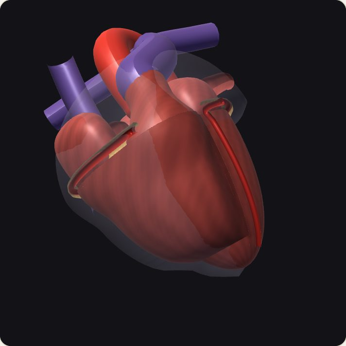

Geometría procedural: VI con pared de volumen constante, VD en media luna, plano AV cerrado con los 4 anillos valvulares, aurículas que apoyan hasta el surco AV (orejuelas, cavas, 4 venas pulmonares), infundíbulo del VD con el tronco pulmonar cruzando delante de la aorta, raíz aórtica con 3 senos de Valsalva y las coronarias saliendo de ellos, grasa del surco AV e interventricular, seno coronario, papilares y cuerdas, pericardio, movida en cada instante por el mismo motor del latido del paso 1. Todo ilustrativo. Gira deslizando en horizontal (en vertical se mueve la página); con dos dedos acercas e inclinas. Con ratón: arrastrar gira y la rueda acerca.

Tu navegador no tiene WebGL: se muestra una imagen fija del corazón. Las cifras, la barra del ciclo y las pruebas siguen funcionando.
Desde las aurículas · anterior ↑ · derecha del paciente →
Ecografía· corte del mismo corazón, en el mismo instante
Imagen reconstruida, no una ecografía real: el plano de cada vista es fijo en el cuerpo y el corazón lo cruza al latir (por eso en el eje corto mitral, en sístole, la base baja y el corte pasa a cruzar las aurículas). El tejido lleva su moteado consigo; la sangre casi no devuelve eco; los bordes brillan más donde el haz les da de frente (la pared lateral en el apical, paralela al haz, se ve más débil). Ecogenicidades, resolución y ganancia ilustrativas. Idea de The Heart by Ultrasound (D. Ouyang), reconstruida sobre este motor.
Wiggers y asa presión-volumen
Mismo instante que el corazón. Desliza en horizontal sobre el Wiggers o toca el asa para revisar cualquier instante del último latido; ▶ Reanudar vuelve al tiempo real.
Tenue: el último latido completo; fuerte: el latido en curso, que termina en el cursor. Rayas: ESPVR (pendiente = Ees efectiva del modelo, con el barorreflejo) y EDPVR (rigidez diastólica), sin tabique ni pericardio. Ilustrativo.
Ángulo del corte
Pruebas del barorreflejo· cambia algo y mira cómo responde la circulación (tarda segundos: usa «Avanzar 10 s»)
Fase—
Último latido—
VI—
VD—
Aorta—
Aurículas—
MitralAórticaTricúspidePulmonar
Lo que debe verse: la base baja hacia el ápex en sístole (~13 mm; el ápex casi no se mueve) y el VI se retuerce un poco; la pared del VI engorda al vaciarse. Las válvulas abren según el flujo que pasa y, cerradas, se juntan en su línea de coaptación y se abomban más cuanto mayor es la presión que soportan (mitral en sístole, aórtica en diástole). Las aurículas se vacían con su contracción (onda a) y se llenan mientras baja la base. La fase sale del motor (A-G de Wiggers). Al final de la eyección la aórtica cierra con un breve reflujo (la incisura de la curva aórtica). El barorreflejo sube la FC, las resistencias, el volumen que las venas devuelven y la contractilidad cuando baja la PAM (y al revés); en reposo no actúa. La sangre (roja, oxigenada; violeta, venosa) entra por las venas, cruza cada válvula cuando el motor dice que pasa flujo (cada punto son 2,5 mL) y sale por la aorta y la pulmonar; tras las paredes se ve tenue. La barra del ciclo tiene la duración real de cada fase del último latido: tócala para ir a esa fase. Todo ilustrativo.